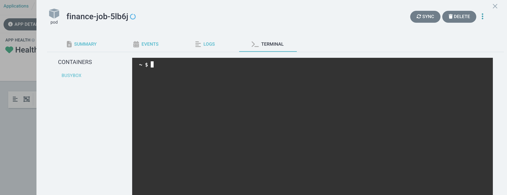
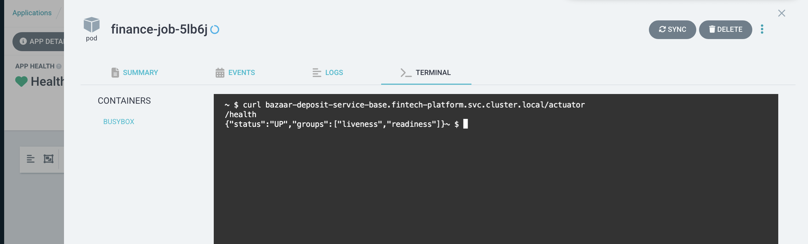

Platform Shell Utility üõ†Ô∏è
A secure way to call internal APIs within our EKS clusters without exposing them publicly.
üéØ Overview
The Platform Shell Utility provides developers with a secure method to access internal APIs that are not exposed through our public API gateway. Instead of making these development/debugging endpoints public, we leverage ArgoCD's web-based terminal to execute API calls directly from within the cluster network.
üîç Why Use This Tool?
- Security First: Keep internal APIs private and secure
- Network Access: Call services that are only accessible within the cluster network
- No Gateway Exposure: Avoid exposing debug/internal endpoints publicly
- Easy Access: Simple web-based interface through ArgoCD
üìã Prerequisites
- Access to ArgoCD dashboard
- Knowledge of the target service's squad and cluster location
üöÄ Step-by-Step Guide
Step 1: Access ArgoCD
- Navigate to your ArgoCD dashboard
- Ensure you have the necessary permissions to access utilities
Step 2: Find the Appropriate Utility
- In the ArgoCD search bar, type
util - You'll see multiple utility applications following this naming pattern:
util-{squad}-{cluster}
Examples:
- util-finance-fintech (finance squad, fintech cluster)
- util-finance-prod (finance squad, prod cluster)
- util-biz-platform-prod (biz-platform squad, prod cluster)

Step 3: Select Your Target Utility
Choose the utility that matches your service's squad and cluster:
- Identify your service's squad (e.g., finance, biz-platform, customer-app, web-app, ops)
- Identify your service's cluster:
- Finance squad: fintech or prod
- All other squads: prod only
- Click on the corresponding utility application
Step 4: Sync the Utility
- Click the Sync button to start a new session
- Wait for the blue progress indicator - this means your 5-minute session has started
Step 5: Access the Terminal
- Click on the pod to switch to the terminal tab

Step 6: Execute Your API Call
Now you can run curl commands to call internal services. Use the following format:
curl {service-name}.{namespace}.svc.cluster.local/{endpoint}
Example:
curl bazaar-deposit-service-base.fintech-platform.svc.cluster.local/actuator/health

üìù Important Notes
Service Naming Convention
- Services follow the pattern:
{service-name}.{namespace}.svc.cluster.local - Always verify your service is running in the correct namespace and cluster
- Use the appropriate utility for your target service's location
Understanding Kubernetes East-West URLs
The URL pattern {service-name}.{namespace}.svc.cluster.local is a Kubernetes DNS name used for internal service-to-service communication within the cluster (also known as "east-west" traffic).
URL Breakdown:
service-name.namespace.svc.cluster.local
│ │ │ │
│ │ │ └── Cluster domain (default: cluster.local)
│ │ └─────── Service type indicator
│ └───────────────── Kubernetes namespace
└─────────────────────────── Service name
Example: bazaar-lending-service-base.lending-platform.svc.cluster.local
- bazaar-lending-service-base = Service name
- lending-platform = Namespace where the service is deployed
- svc = Indicates this is a Kubernetes Service
- cluster.local = Default cluster domain
Why This Works: - Kubernetes has an internal DNS server that resolves these names - Services within the same cluster can communicate using these DNS names - No need for external IPs or load balancers for internal communication - Provides service discovery and load balancing automatically
Session Management
- Each session lasts 10 minutes
- Sessions automatically expire for security
- You can start a new session by syncing again
Supported Squads and Clusters
Make sure to use the correct utility for your service:
Finance Squad (Multiple Clusters):
- finance/fintech: Use util-finance-fintech
- finance/prod: Use util-finance-prod
Rest Squads (Prod Cluster Only):
- biz-platform/prod: Use util-biz-platform-prod
- customer-app/prod: Use util-customer-app-prod
- web-app/prod: Use util-web-app-prod
- ops/prod: Use util-ops-prod
üîß Common Use Cases
Health Checks
# Finance squad service example in fintech
curl service-name-base.lending-platform.svc.cluster.local/actuator/health
# Rest squad service example in prod
curl service-name-base.customer-platform.svc.cluster.local/actuator/health
API Testing
# Business platform service
curl -X POST service-name-base.biz-platform.svc.cluster.local/api/endpoint \
-H "Content-Type: application/json" \
-d '{"key": "value"}'
❓ Troubleshooting
Common Issues
Service Not Found (404) - Verify the service name and namespace - Check if the service is running in the expected cluster - Ensure you're using the correct utility for the target squad
Connection Timeout - Confirm the service is healthy and running - Check if you're in the correct network namespace - Verify the service port (default is usually 5000)
Session Expired - Sessions last only 10 minutes - Simply sync the utility again to start a new session
üîê Security Considerations
- Sessions are time-limited for security
- Only internal cluster services are accessible
- No external internet access from utility pods
Need Help? Contact the Platform Team or check our internal documentation for more specific use cases.